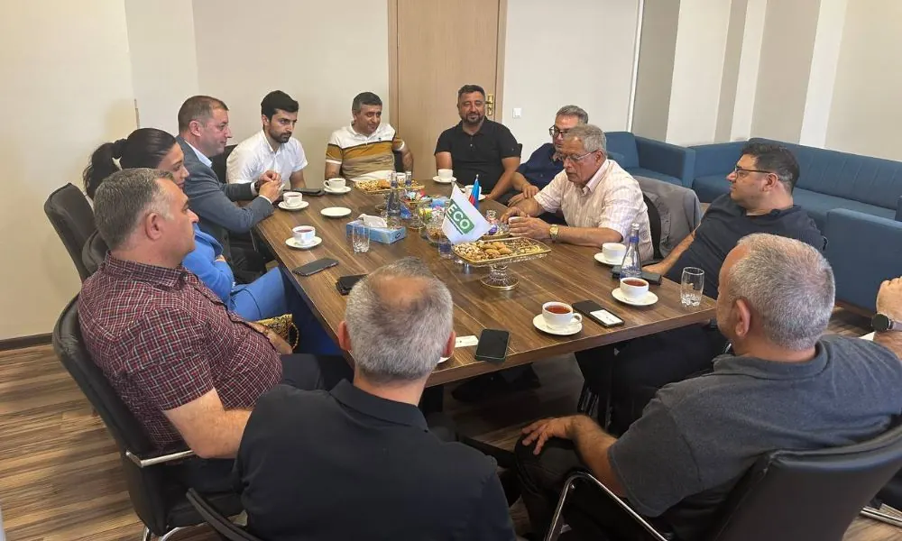
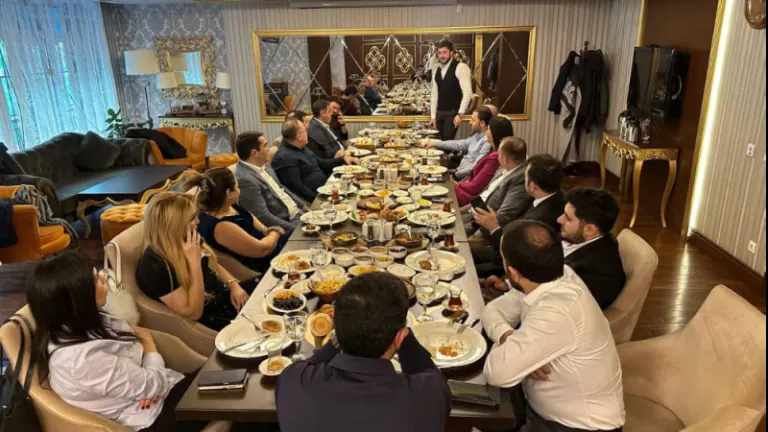
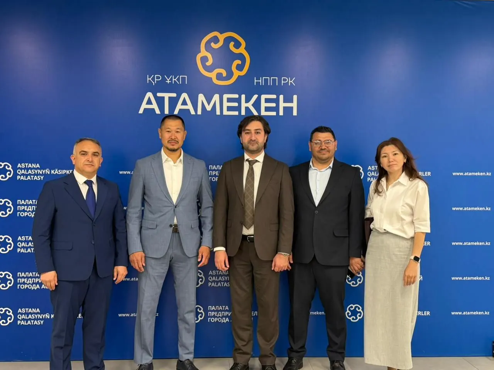
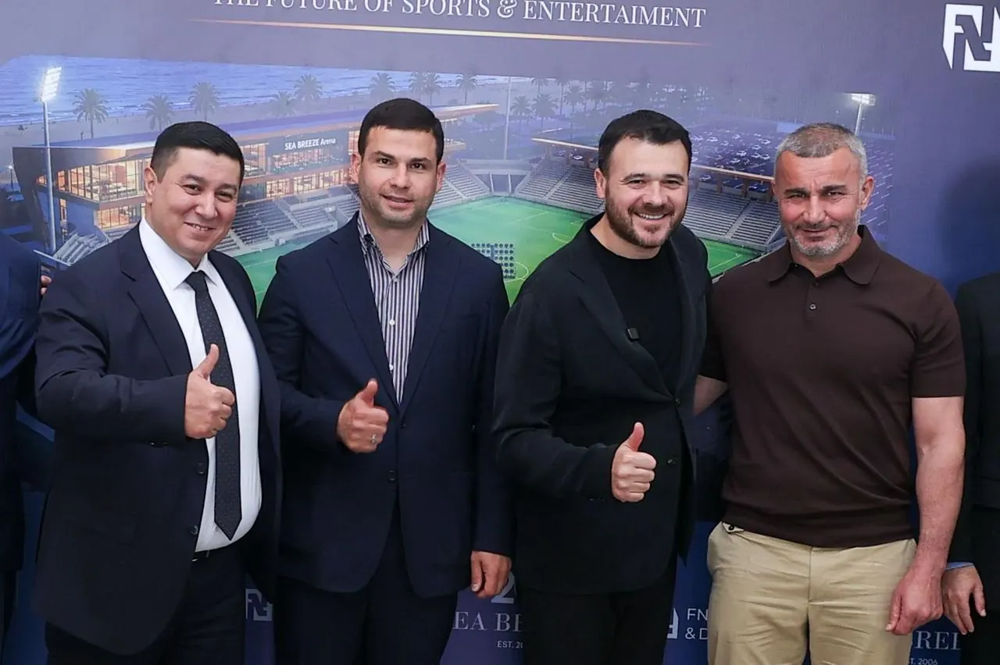

FounderClub — a clearer home for a business community.
Product structure, UI/UX and development for a platform connecting membership, events, news and community activity.
The work focused on giving multiple kinds of community content a consistent hierarchy without losing the identity and local character of FounderClub.
- Client
- FounderClub
- Role
- Product structure, UI/UX, development
- Duration
- Approx. six weeks
- Status
- Live client project
Different activities needed to feel like one platform.
FounderClub brings together a business community, events, editorial news and membership. The website needed to make those parts easy to understand while maintaining a premium and locally grounded identity.
A structured editorial system, not a collection of disconnected pages.
The interface uses a consistent hierarchy for announcements, event material and community content. Strong imagery carries the identity; restrained typography and predictable navigation carry the information.




A coherent platform that is live and ready to be used.
The delivered website gives FounderClub a consistent place to present its community, activities and news. No performance claims are made here until verified project data is available.
See the project in its live context.
Visit FounderClub or discuss a related digital platform with Vulcet.
Visit FounderClub Discuss a project